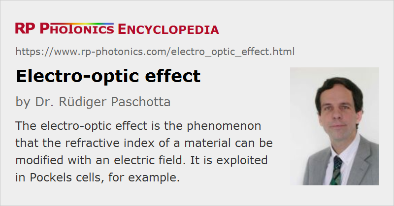

Electro-optic Effect
Definition: the phenomenon that the refractive index of a material can be modified with an electric field
Alternative term: Pockels effect
German: elektrooptischer Effekt
Categories: nonlinear optics, physical foundations
How to cite the article; suggest additional literature
Author: Dr. Rüdiger Paschotta
The electro-optic effect (or electrooptic effect) is the modification of the refractive index of a medium, caused by an electric field. (Some authors more generally consider electro-optic effects such that any optical properties may be affected by an electric field.)
Only non-centrosymmetric materials (mostly nonlinear crystal materials) exhibit the linear electro-optic effect, also called the Pockels effect, where the refractive index change is proportional to the electric field strength (see the article on Pockels effect for more details).
Materials exhibiting the Pockels effect are called electro-optic materials. Some examples for such materials are lithium niobate (LiNbO3), lithium tantalate (LiTaO3), potassium titanyl phosphate (KTP) and β-barium borate (BBO).
All centrosymmetric media exhibit only the Kerr electro-optic effect, also called Kerr effect, where the refractive index change is proportional to the square of the electric field strength, and is typically much weaker than for the linear effect within the range of electric field strength which the material can tolerate.
Most devices in electro-optics are based on the linear electro-optic effect. It is exploited in Pockels cells, which can be part of electro-optic modulators, and for electro-optic sampling.
Questions and Comments from Users
Here you can submit questions and comments. As far as they get accepted by the author, they will appear above this paragraph together with the author’s answer. The author will decide on acceptance based on certain criteria. Essentially, the issue must be of sufficiently broad interest.
Please do not enter personal data here; we would otherwise delete it soon. (See also our privacy declaration.) If you wish to receive personal feedback or consultancy from the author, please contact him e.g. via e-mail.
By submitting the information, you give your consent to the potential publication of your inputs on our website according to our rules. (If you later retract your consent, we will delete those inputs.) As your inputs are first reviewed by the author, they may be published with some delay.
See also: Pockels effect, Pockels cells, Kerr effect, electro-optics, electro-optic modulators, electro-optic sampling
and other articles in the categories nonlinear optics, physical foundations
|  |
If you like this page, please share the link with your friends and colleagues, e.g. via social media:
These sharing buttons are implemented in a privacy-friendly way!